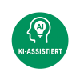
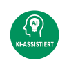
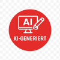

KI-assistiert
Grün (#3DA35D)
Der Mensch erstellt den Hauptinhalt; KI hilft bei Struktur oder Formulierung.
Transparenz · Verantwortung · Kreativität
Ein offenes Kennzeichnungssystem für KI-beteiligte Inhalte. Es macht sichtbar, in welchem Maß Künstliche Intelligenz an der Entstehung von Texten, Bildern oder Ideen beteiligt war – klar, ehrlich, nachvollziehbar.
Transparenz stärkt Vertrauen. Der Rosche Standard definiert drei klare Stufen der KI-Beteiligung und setzt einfache, visuelle Marker für Publikationen – vom Social Post bis zum Whitepaper.
Der Mensch erstellt den Hauptinhalt; KI hilft bei Struktur oder Formulierung.
Mensch & KI arbeiten gleichberechtigt zusammen – der Output entsteht im Dialog.
KI generiert Rohinhalte, der Mensch prüft, überarbeitet und trägt Verantwortung.
Der Rosche Standard ist offen und frei nutzbar unter Namensnennung. Er verpflichtet zu Transparenz und Wahrhaftigkeit – und bewahrt zugleich kreative Freiheit.
Lizenz: Creative Commons CC BY 4.0
Ulf Rosche entwickelt Konzepte für transparente, ethische KI‑Nutzung in Sprache, Kultur und Design. Der Rosche Standard ist Teil seines Engagements für eine verantwortungsvolle, kreative Zukunft.
Kontakt: ulf_rosche@web.de